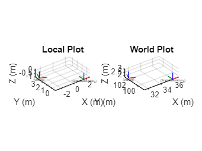
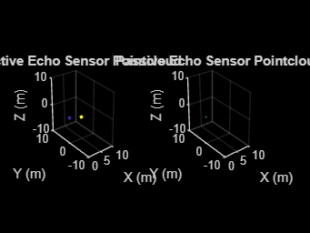
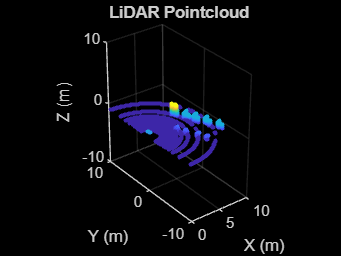
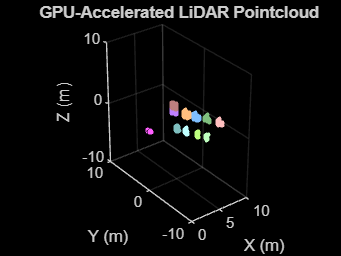
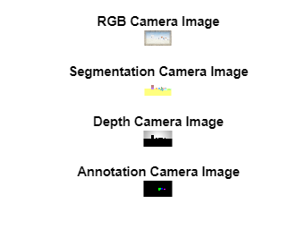
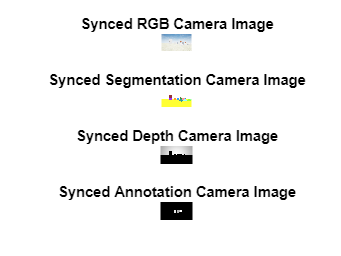

How to use AirSim with Matlab
AirSim and Matlab can be integrated using Python. an example Matlab client is provided demonstrating how to interact with AirSim from Matlab. This can be used from source or installed as a toolbox (install from File Exchange, or from source by double-clicking or dragging into Matlab the file Cosys-AirSim Matlab API Client.mltbx)
Prerequisites
These instructions are for Matlab 2024a (with toolboxes for the client: Computer Vision, Aerospace, Signal Processing Toolbox) UE 5.X and latest Cosys-AirSim release.
It also requires the AirSim python package to be installed.
For this go into the PythonClient folder and use pip to install it to your python environment that is also used in Matlab with pip install .
You can find out in Matlab what Python version is used with
pe = pyenv;
pe.Version
You should have these components installed and working before proceeding.
Usage
This a client implementation of the RPC API for Matlab for the Cosys-AirSim simulation framework. A main class AirSimClient is available which implements all API calls. Do note that at this point not all functions have been tested and most function documentation was auto-generated. This is still a WIP client.
Initial setup
When starting with this wrapper, first try to make a connection to the Cosys-AirSim simulation.
vehicle_name = "airsimvehicle";
airSimClient = AirSimClient(IsDrone=false, IP="127.0.0.1", port=41451);
Now the client object can be used to run API methods from. All functions have some help text written for more information on them.
Example
This example will:
- Connect to AirSim
- Get/set vehicle pose
- Get instance segmentation groundtruth table
- Get object pose(s)
- Get sensor data (imu, echo (active/passive), (gpu)LiDAR, camera (info, rgb, depth, segmentation, annotation))
Do note that the AirSim matlab client has almost all API functions available but not all are listed in this test script. For a full list see the source code fo the AirSimClient class.
Do note the test script requires next to the toolboxes listed above in the Prerequisites the following Matlab toolboxes:
- Lidar Toolbox
- Navigation Toolbox
- Robotics System Toolbox
- ROS Toolbox
- UAV Toolbox
Setup connection
%Define client
vehicle_name = "airsimvehicle";
airSimClient = AirSimClient(IsDrone=false, ApiControl=false, IP="127.0.0.1", port=41451);
Groundtruth labels
% Get groundtruth look-up-table of all objects and their instance
% segmentation colors for the cameras and GPU LiDAR
groundtruthLUT = airSimClient.getInstanceSegmentationLUT();
Get some poses
% All poses are right handed coordinate system X Y Z and
% orientations are defined as quaternions W X Y Z.
% Get poses of all objects in the scene, this takes a while for large
% scene so it is in comment by default
poses = airSimClient.getAllObjectPoses(false, false);
% Get vehicle pose
vehiclePoseLocal = airSimClient.getVehiclePose(vehicle_name);
vehiclePoseWorld = airSimClient.getObjectPose(vehicle_name, false);
% Choose the object to get the pose from (this one is in the Blocks env)
chosenObject = "Cylinder3";
% Get its pose
objectPoseLocal = airSimClient.getObjectPose(chosenObject, true);
objectPoseWorld = airSimClient.getObjectPose(chosenObject, false);
figure;
subplot(1, 2, 1);
plotTransforms([vehiclePoseLocal.position; objectPoseLocal.position], [vehiclePoseLocal.orientation; objectPoseLocal.orientation], FrameLabel=["Vehicle"; finalName], AxisLabels="on")
axis equal;
grid on;
xlabel("X (m)")
ylabel("Y (m)")
zlabel("Z (m)")
title("Local Plot")
subplot(1, 2, 2);
plotTransforms([vehiclePoseWorld.position; objectPoseWorld.position], [vehiclePoseWorld.orientation; objectPoseWorld.orientation], FrameLabel=["Vehicle"; finalName], AxisLabels="on")
axis equal;
grid on;
xlabel("X (m)")
%% Set vehicle pose
airSimClient.setVehiclePose(airSimClient.getVehiclePose().position + [1 1 0], airSimClient.getVehiclePose().orientation)
ylabel("Y (m)")
zlabel("Z (m)")
title("World Plot")
drawnow

%% Set vehicle pose
airSimClient.setVehiclePose(airSimClient.getVehiclePose(vehicle_name).position + [1 1 0], airSimClient.getVehiclePose(vehicle_name).orientation, false, vehicle_name)
IMU sensor Data
imuSensorName = "imu";
[imuData, imuTimestamp] = airSimClient.getIMUData(imuSensorName, vehicle_name)
Echo sensor data
% Example plots passive echo pointcloud
% and its reflection directions as 3D quivers
echoSensorName = "echo";
enablePassive = true;
[activePointCloud, activeData, passivePointCloud, passiveData , echoTimestamp, echoSensorPose] = airSimClient.getEchoData(echoSensorName, enablePassive, vehicle_name);
figure;
subplot(1, 2, 1);
if ~isempty(activePointCloud)
pcshow(activePointCloud, color="X", MarkerSize=50);
else
pcshow(pointCloud([0, 0, 0]));
end
title('Active Echo Sensor Pointcloud')
xlabel("X (m)")
ylabel("Y (m)")
zlabel("Z (m)")
xlim([0 10])
ylim([-10 10])
zlim([-10 10])
subplot(1, 2, 2);
if ~isempty(passivePointCloud)
pcshow(passivePointCloud, color="X", MarkerSize=50);
hold on;
quiver3(passivePointCloud.Location(:, 1), passivePointCloud.Location(:, 2), passivePointCloud.Location(:, 3),...
passivePointCloud.Normal(:, 1), passivePointCloud.Normal(:, 2), passivePointCloud.Normal(:, 3), 2);
hold off
else
pcshow(pointCloud([0, 0, 0]));
end
title('Passive Echo Sensor Pointcloud')
xlabel("X (m)")
ylabel("Y (m)")
zlabel("Z (m)")
xlim([0 10])
ylim([-10 10])
zlim([-10 10])
drawnow

LiDAR sensor data
% Example plots lidar pointcloud and getting the groundtruth labels
lidarSensorName = "lidar";
enableLabels = true;
[lidarPointCloud, lidarLabels, LidarTimestamp, LidarSensorPose] = airSimClient.getLidarData(lidarSensorName, enableLabels, vehicle_name);
figure;
if ~isempty(lidarPointCloud)
pcshow(lidarPointCloud, MarkerSize=50);
else
pcshow(pointCloud([0, 0, 0]));
end
title('LiDAR Pointcloud')
xlabel("X (m)")
ylabel("Y (m)")
zlabel("Z (m)")
xlim([0 10])
ylim([-10 10])
zlim([-10 10])
drawnow

GPU LiDAR sensor data
Example plots GPU lidar pointcloud with its RGB segmentation colors
gpuLidarSensorName = "gpulidar";
enableLabels = true;
[gpuLidarPointCloud, gpuLidarTimestamp, gpuLidarSensorPose] = airSimClient.getGPULidarData(gpuLidarSensorName, vehicle_name);
figure;
if ~isempty(gpuLidarPointCloud)
pcshow(gpuLidarPointCloud, MarkerSize=50);
else
pcshow(pointCloud([0, 0, 0]));
end
title('GPU-Accelerated LiDAR Pointcloud')
xlabel("X (m)")
ylabel("Y (m)")
zlabel("Z (m)")
xlim([0 10])
ylim([-10 10])
zlim([-10 10])
drawnow

Cameras
%% Get camera info
cameraSensorName = "frontcamera";
[intrinsics, cameraSensorPose] = airSimClient.getCameraInfo(cameraSensorName, vehicle_name);
%% Get single camera images
% Get images sequentially
cameraSensorName = "front_center";
[rgbImage, rgbCameraIimestamp] = airSimClient.getCameraImage(cameraSensorName, AirSimCameraTypes.Scene, vehicle_name);
[segmentationImage, segmentationCameraIimestamp] = airSimClient.getCameraImage(cameraSensorName, AirSimCameraTypes.Segmentation,vehicle_name);
[depthImage, depthCameraIimestamp] = airSimClient.getCameraImage(cameraSensorName, AirSimCameraTypes.DepthPlanar,vehicle_name);
[annotationImage, annotationCameraIimestamp] = airSimClient.getCameraImage(cameraSensorName, AirSimCameraTypes.Annotation, vehicle_name, "TextureTestDirect");
figure;
subplot(4, 1, 1);
imshow(rgbImage)
title("RGB Camera Image")
subplot(4, 1, 2);
imshow(segmentationImage)
title("Segmentation Camera Image")
subplot(4, 1, 3);
imshow(depthImage ./ max(max(depthImage)).* 255, gray)
title("Depth Camera Image")
subplot(4, 1, 4);
imshow(annotationImage)
title("Annotation Camera Image")
drawnow

%% Get synced camera images
% By combining the image requests they will be synced and taken in the same frame
cameraSensorName = "front_center";
[images, cameraIimestamp] = airSimClient.getCameraImages(cameraSensorName, ...
[AirSimCameraTypes.Scene, AirSimCameraTypes.Segmentation, AirSimCameraTypes.DepthPlanar, AirSimCameraTypes.Annotation], ...
vehicle_name, ["", "", "", "TextureTestDirect"]);
figure;
subplot(4, 1, 1);
imshow(images{1})
title("Synced RGB Camera Image")
subplot(4, 1, 2);
imshow(images{2})
title("Synced Segmentation Camera Image")
subplot(4, 1, 3);
imshow(images{3} ./ max(max(images{3})).* 255, gray)
title("Synced Depth Camera Image")
subplot(4, 1, 4);
imshow(images{4})
title("Synced Annotation Camera Image")
drawnow
